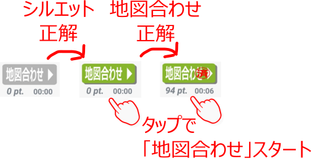

「シルエット当て」マニアなら一目瞭然？
〜アクティビティ起動後はこんな感じ〜
選択した運営会社が管理する路線の一覧が表示されます。各路線のシルエットを当てるクイズです。画面の説明
- 画面の全体構成
事業会社の合計スコアと路線選択リストが表示されます。 - 路線選択リストのアイテム

-
「路線名」
漢字と仮名で路線の名前を表示 -
「路線シルエット」
路線のシルエットイメージを表示します。未解答だと「？」と表示されます。
正解するとシルエットイメージと合わせて得点（pt.)を表示します。 -
「地図合わせ」
「地図合わせ」アクティビティのスタートボタン、得点(pt.)、プレイタイム(mm:ss)を表示します。

スタートボタンは「路線シルエット」が未正解だと押せず、正解すると押せるようになります。「地図合わせ」に正解するとスタートボタンに「済」マークが付き、得点とタイムが表示されます。 -
「駅並べ」
「駅並べ」アクティビティのスタートボタン、得点（pt.）、進捗（正解駅数／路線内駅数）を表示します。

スタートボタンは「路線シルエット」が未正解だと押せず、正解すると押せるようになります。「駅並べ」の進捗が100%（路線内の全駅回答）でとスタートボタンに「済」マークが付きます。 -
合計得点
「路線シルエット」の得点、「地図合わせ」の得点、「駅並べ」の得点の合計点です。
-
「路線名」
遊び方の説明
「？」の路線をタップすると候補のシルエット一覧が表示されます。正解のシルエットをタップして選択してください。
- 正解で
と表示され得点が得られます。
- 間違えると
 と表示され獲得できる点数が減ります。
と表示され獲得できる点数が減ります。
「シルエット当て」に正解すると、
「地図合わせ」、「駅並べ」が遊べるようになります。
- 「地図合わせ」アクティビティのスタート
または、
をタップすると「地図合わせ」アクティビティに移ります
- 「駅並べ」アクティビティのスタート
または、
をタップすると「駅並べ」アクティビティに移ります
その他の操作
路線別の操作
- ちょっとだけ答えをみたい
- 長押しメニューで「回答を見る」を選択
- もう一度はじめから遊ぶ
- 長押しメニューの「回答をクリア」を選択
- 運営会社をWeb検索
- 長押しメニューで「Webを検索」を選択する
全体共通の操作
- ⓘボタンの表示／非表示を切り替える
- オプションメニューの「ⓘボタンを消す（表示する）」を選択
- 「線路と駅」の説明、免責事項を見る
- オプションメニューの「線路と駅について」を選択する
- 難しさのレベルを変える
- オプションメニューの「レベル設定」を選択する
- 使い方の説明を見る
- オプションメニューの「使い方」を選択する
- ご意見、お問い合わせ
- オプションメニューの「お問い合わせ」からメーラを起動する
Next